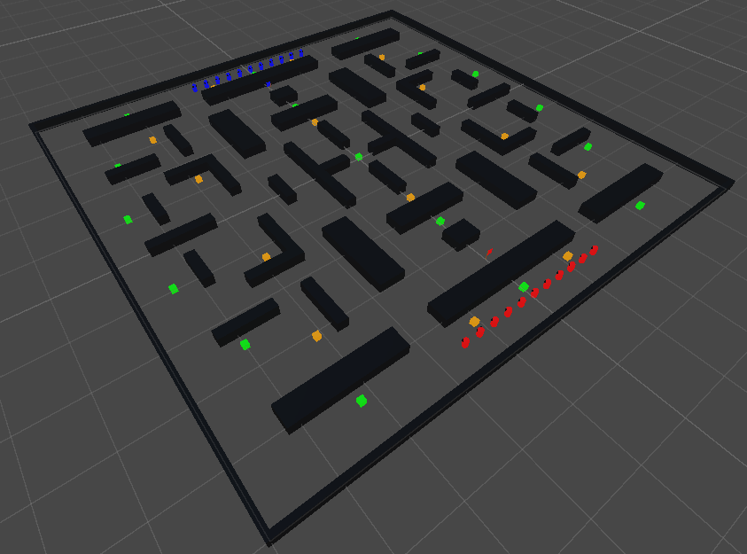

Capture the Flag
This exercise pits two teams of troopers against each other in a game of capture the flag.

Trooper Controller
The TrooperController component is provided to be a starting point for you to implement your behaviour design in for the troopers.
Trooper
The Trooper component has a given health value that if it reaches 0 will cause the trooper to be eliminated, respawning after a certain amount of time. Then are armed with a blaster actuator. Troopers will automatically interact with pickups they walk into.
Sensors
Six sensors have been provided to help you with your development. Unlike the microbes exercise, these sensors are not yet attached to the troopers prefab, and instead this is left for you to decide which combination is best to complete the exercise.
Trooper Vision Sensor
The TrooperVisionSensor allows for detecting other troopers.
Trooper Enemy Vision Sensor
The TrooperEnemyVisionSensor is a version of the TrooperVisionSensor which detects troopers on the enemy team.
Trooper Team Vision Sensor
The TrooperTeamVisionSensor is a version of the TrooperVisionSensor which detects troopers on the same team.
Ammo Vision Sensor
The AmmoVisionSensor allows for detecting all ammo pickups.
Health Vision Sensor
The HealthVisionSensor allows for detecting all health pickups.
Flag Vision Sensor
The FlagVisionSensor allows for detecting both flag in the game.
Blaster Actuator
The BlasterActuator is an version of an attack actuator which is capable of reducing the health of troopers. The blaster requires ammo, and with no ammo, the blaster will fail to attack. For your convenience, a BlasterActuator has been attached to the trooper prefab.
Pickups
Troopers will automatically interact with pickups they walk into.
Ammo Pickup
AmmoPickup instances will restore a trooper's blater actuator's ammo. After being used by a trooper, the ammo pickup will go on cooldown before it can be used again.
Health Pickup
HealthPickup instances will restore a trooper's health. After being used by a trooper, the health pickup will go on cooldown before it can be used again.
Flag
There are two Flag instances in the game, one for each team. Troopers interact with the flags in the following ways:
- The flag is for the trooper's team:
- If the flag is already at its base, being where it starts the game at, nothing happens.
- Anywhere else, making contact with the flag when it is on the ground will return it to the base.
- The flag is for the enemy team:
- The flag will be picked up. If returend to the trooper's base, being the spawn position of their team's flag, the enemy flag will be captured. Once captured, a flag will return back to its base. If eliminated while carrying a flag, the flag will be dropped for other troopers to interact with.
Spawn Point
The SpawnPoint components indicate where troopers can spawn. Spawns are chosen by positions that are open first, and then those which are closest to the center of the level.
Capture the Flag Manager
The CaptureTheFlagManager handles the configuration for the exercise.